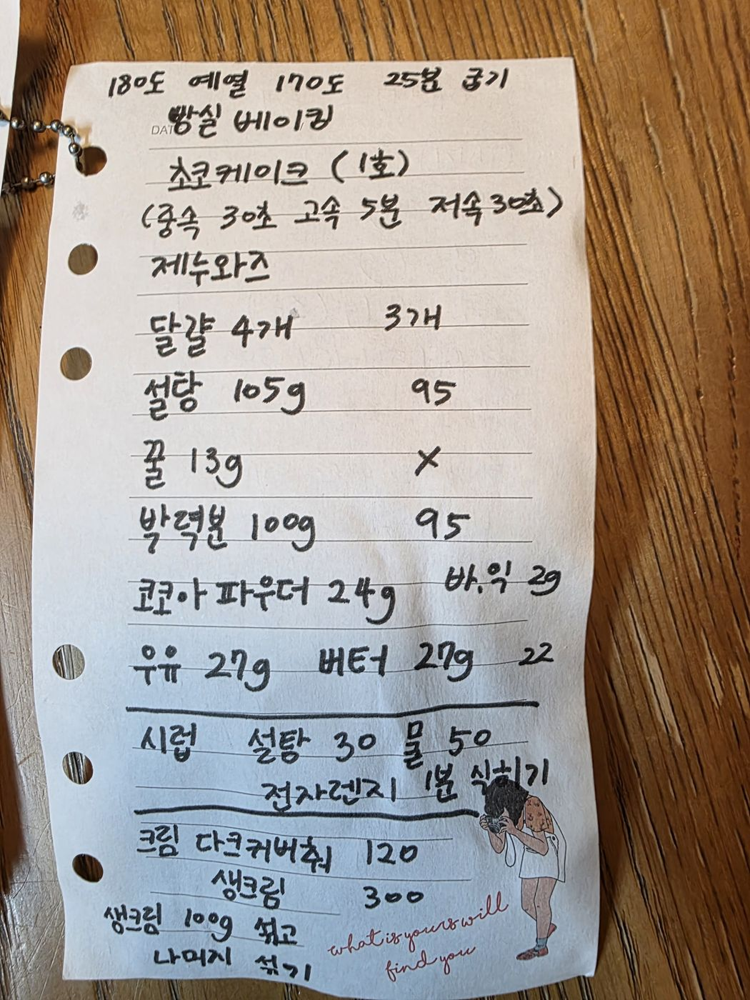

← 전체 레시피
케이크
🍰 초코 케이크 (1호)
손으로 적은 노트를 그대로 옮긴 레시피입니다.
분량
1호 케이크
굽기
180℃ 예열 → 170℃ 25분
출처
빵실베이킹
📷 원본 노트 사진 보기
재료
제누와즈 (괄호는 줄인 배합)
달걀 4개 (3개)
설탕 105g (95g)
꿀 13g (생략)
박력분 100g (95g)
코코아파우더 24g (+ 바닐라익스트랙 2g)
우유 27g
버터 27g (22g)
시럽
설탕 30g
물 50g
크림
다크 커버춰 120g
생크림 300g
만드는 법
달걀·설탕·꿀을 중속 30초 → 고속 5분 → 저속 30초로 휘핑한다.
가루류를 체 쳐 섞고, 데운 우유+버터를 넣어 마무리한다.
180℃ 예열 후 170℃에서 25분 굽는다.
시럽: 설탕 30g + 물 50g을 전자레인지 1분 돌린 뒤 식힌다.
크림: 다크 커버춰 120g에 생크림 100g을 먼저 섞고, 나머지 200g을 섞는다.
시트에 시럽을 바르고 크림으로 아이싱한다.

원본 노트 사진 — 탭하면 크게 볼 수 있어요